Le Cozy-Game est-il une réponse face à une société anxiogène ? écrit par Julie Rollet sous la direction de Damien Baïs
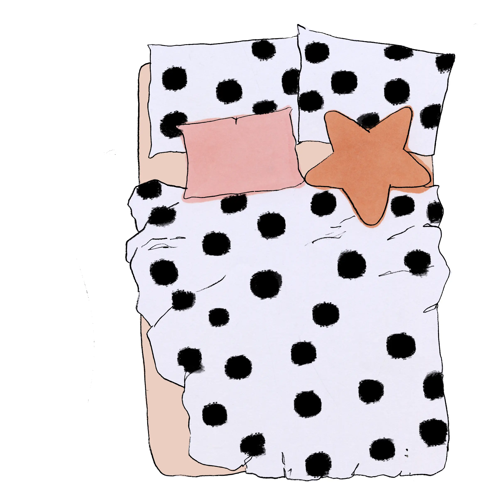
Tout le monde joue aux jeux-video
Nous connaissons globalement, sans forcément y jouer, quelques grandes catégories de jeux vidéo : les combats entre guerriers, les jeux de construction, les jeux demandant de la réflexion et de la stratégie ou bien les jeux sur mobile.Depuis quelques années, une nouvelle catégorie émerge, celle que nous nommons le ‘cozy-game’ 11. ScreenRant, « What Cozy-Games are & What Cozy Gaming Really Means ? », Carne Lambersten, 2024 [disponible en ligne]. Bien que ce nom ne représente qu’une mécanique de jeu ainsi qu’une atmosphère, il se différencie des autres types de jeux vidéo mainstream en mettant en avant la douceur de son gameplay.
D’après différents blogs, articles, vidéos, podcasts, et même essais, le terme du ‘cozy-game’ désigne avant tout un genre basé sur la non-violence et l’absence du stress lié au temps. Ce sont des jeux pensés pour détendre, grâce à la richesse des ressources disponibles (par exemple la nourriture ou un logement), un rythme lent et sans pression, une prise en main facile et surtout, par une atmosphère réconfortante.
Bien que ce terme soit récent, on pense que les premiers jeux de ce genre remontent aux années 1980, avec par exemple
Little Computer People
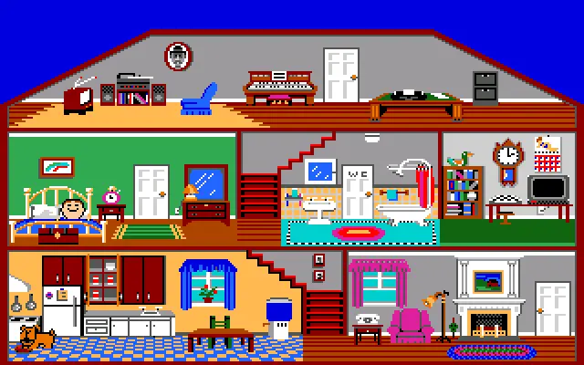
22. GamesIndustry.biz, « What are Cozy-Game and What Makes Them Cozy ? », Colin Campbell, 2020 [disponible en ligne]. Ce jeu vise à simuler une vie quotidienne dans une maison vue en coupe latérale, reprenant le fonctionnement d’une maison de poupée ou de Playmobil. On retrouve aussi Les Sims
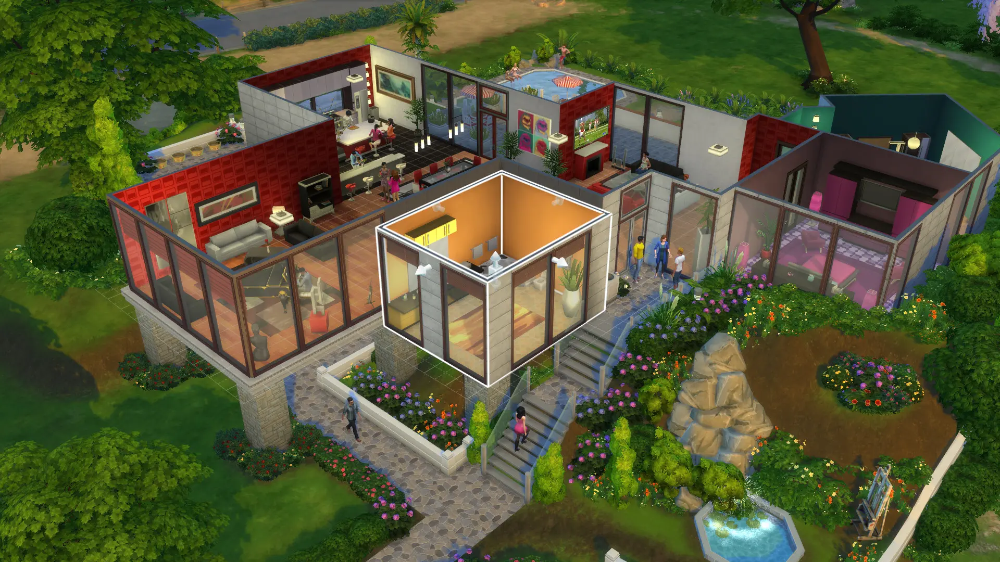
, créé en 2000, représentant des simulations de vie avec une liberté dans nos décisions, façonnant nos propres univers.
Ces jeux appartiennent à un type de gameplay qui reprend le concept de modéliser le quotidien et proposent des objectifs simples et rapides à accomplir.
On retrouve notamment cette approche dans les jeux de types ‘pink-games’ ou ‘les jeux flash’, assez populaire dans les années 2010. On y joue des missions, ayant pour but de prendre soin de son chien ou choisir la couleur des ongles du personnage que nous incarnons, illustrant ainsi l’aspect détente et personnalisation des ‘cozy-games’, sur lequel nous reviendrons plus en détail dans une autre partie de ce mémoire.
C’est à partir des années 2020, durant le Covid-19, qu’émerge cette volonté de nommer ce genre se faisant de plus en plus fréquent. Parmi ces jeux, on retrouve la mise à jour du jeu Animal Crossing : New Horizon
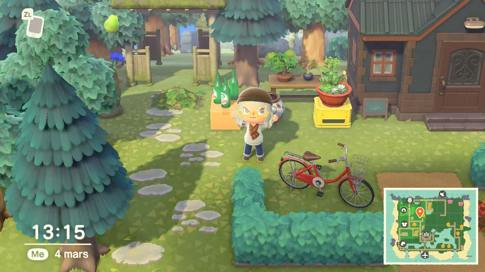
, qui devient très populaire et joué par un large public 33. Selon Buisness Insider les ventes de la Nintendo augmente de 73,3 % en 2020, une hausse particulièrement portée par le jeu Animal Crossing. Les utilisateurs se créent une île selon leur imagination et leurs goûts, la partageant par la suite sur les réseaux sociaux, développant ainsi leur expression personnelle et leur monde. Le jeu se déroule en temps réel, permettant d’incarner un personnage idéal capable de construire un village à son rythme, illustrant parfaitement l’aspect bienveillant et détente des ‘cozy-games’. Animal Crossing marque ainsi la popularisation de ce type de jeux, et la naissance de son terme tel que nous le connaissons aujourd’hui.
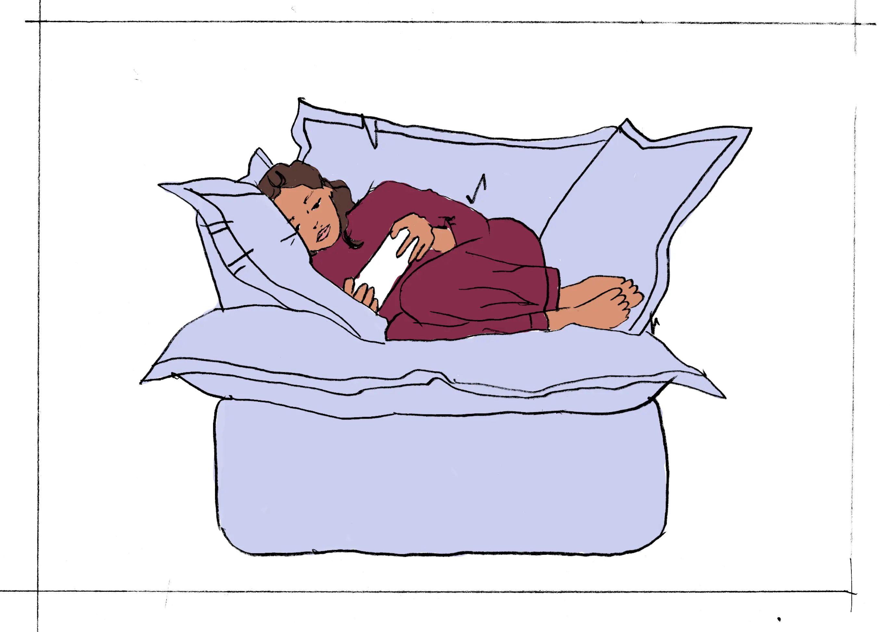
Tout comme les livres ou les films, les jeux vidéo ont aussi besoin d’être classés par catégories. Ne pouvant pas tout rassembler pour satisfaire chaque utilisateur, les joueurs ont commencé à catégoriser les différents jeux existants. Nous avons vu quelques exemples plus tôt, mais ils en existent encore bien d’autres, comme les FPS (first person shooters), ou les RPG (role playing games) ou bien encore les jeux d’horreur.
Chacun d’eux représente une manière de jouer, une atmosphère et des mécaniques spécifiques.
Tout comme dans le ‘cozy-game’, des communautés se sont créées afin que chacun puisse trouver son style et faciliter la recherche et l’archivage des différents jeux existants 44. Sur les réseaux sociaux et sur les plateformes tels que YouTube, nous pouvons retrouver des communautés parlants de ‘cozy-game’ comme @PaytonsCorner, @SeeingStarsGaming, ou encore @CozyK.
Avant de commencer, penchons-nous sur le terme.
Le ‘cozy-game’, provient du mot américain Cozy, signifiant « confort », mettant ainsi l’accent sur une ambiance relaxante, sans source de stress ni d’effort. Les joueurs sont à la recherche d’un monde rassurant, idéalisé, où les actions restent simples.
Au-delà de Animal Crossing ou Stardew Valley
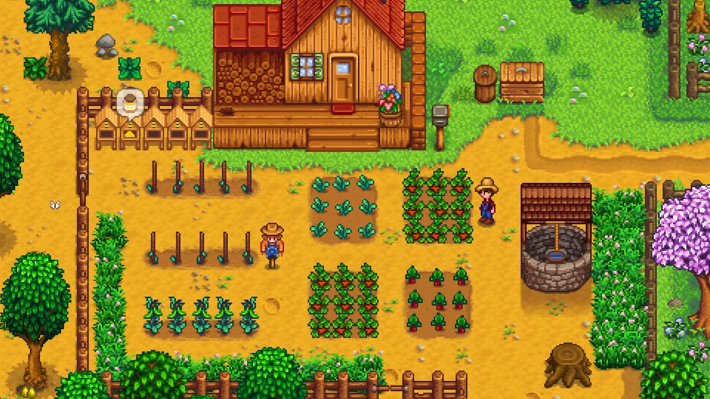
, deux jeux populaires dans ce milieu, on peut retrouver aussi, A Short Hike
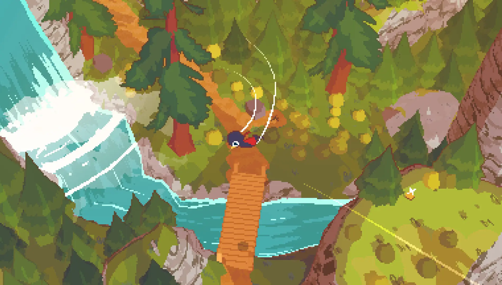
ou Naïad
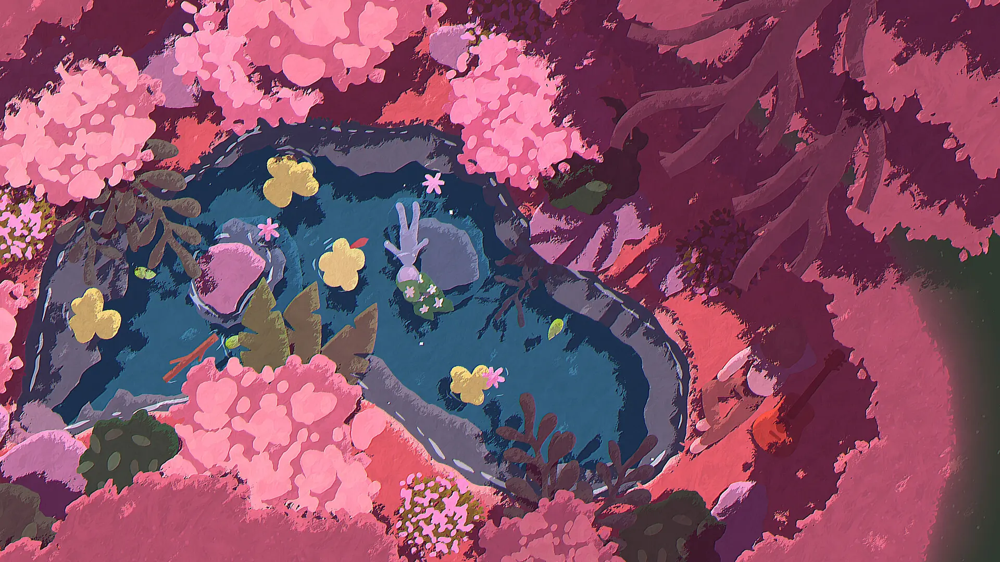
qui amènent à l’exploration d’un monde en toute liberté, en rencontrant durant son chemin des personnages ou des secrets habitant l’île visitée.
Les joueurs peuvent aussi ranger des cartons de déménagement dans Unpacking
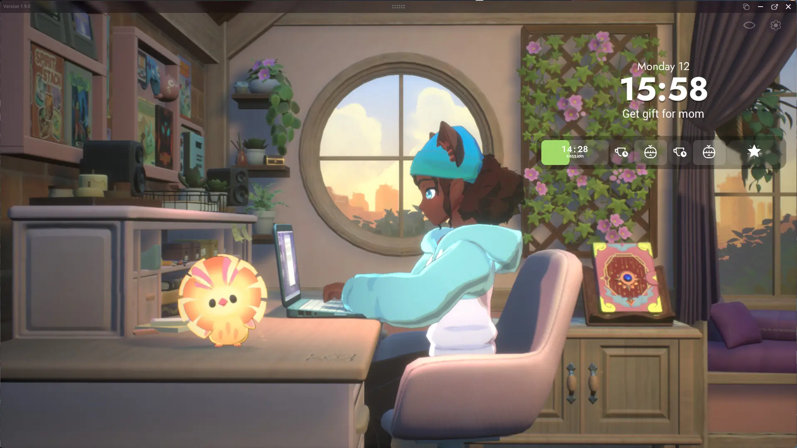
, ou écrire des lettres dans Kinds Words
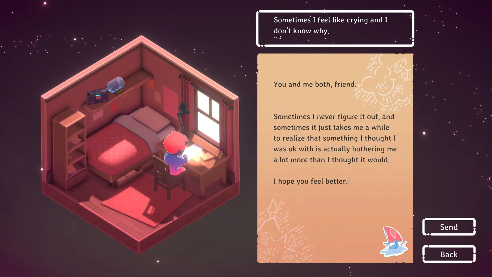
à eux-mêmes ou à ceux qui en ont besoin. Certains jeux invitent aussi à ressentir de la nostalgie ou un sentiment de chez soi, en intégrant des éléments culturels, avec Venba
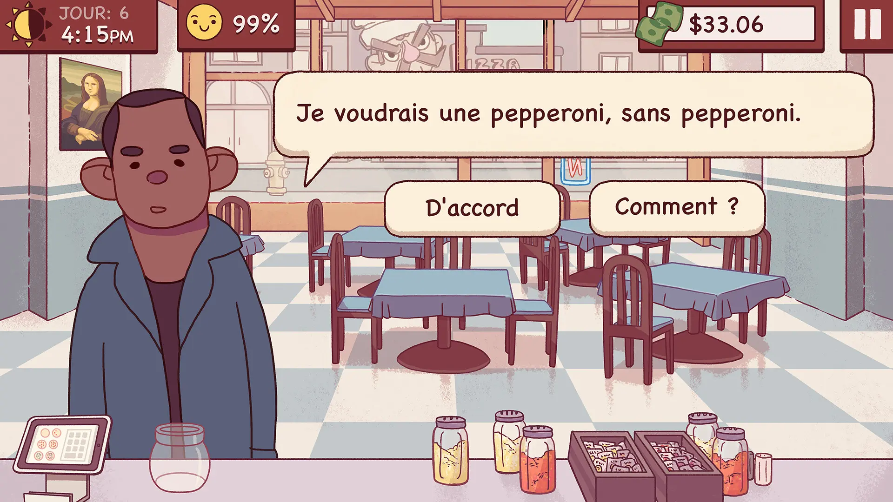
qui s’intéresse à la cuisine du Sud de l’Inde, ou le jeu Panelka
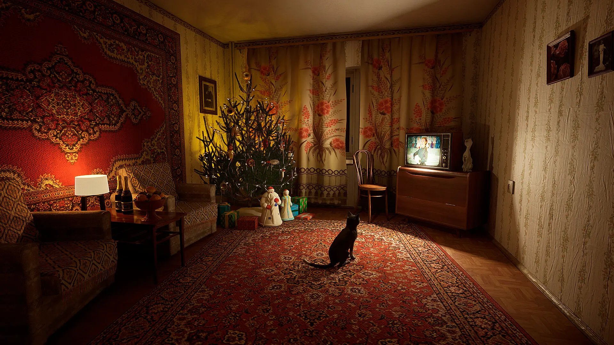
, qui permet d’aménager et de décorer un appartement de l’Europe de l’Est.
Ainsi, le ‘cozy-game’ évolue, passant d’une simple simulation de vie quotidienne à des concepts plus variés. Il est un espace complexe regroupant plusieurs thématiques et questionnements liés à nos routines.
Ce mémoire s’interrogera donc sur l’émergence des ‘cozy-games’ et si finalement, elle ne serait pas une réponse face à une société anxiogène.
Pour introduire les questionnements et les recherches sur ce thème, nous suivrons Amaya, de son enfance jusqu’à aujourd’hui, afin de nous aider à comprendre notre rapport à ce type de jeux, et nous permettre de développer les différents sujets qui seront abordés.
Coincée dans ma chambre en 2020
Covid-19
Nous voici donc dans la chambre d’Amaya. C’est un jour ensoleillé, une fin d’après-midi de mai. Cela fait un moment qu’elle n’est pas sortie de sa chambre, longtemps à vrai dire. Les gens autour d’elle ne sortent pas non plus.
Le temps dehors, s’est comme mise en pause, rien ne motive à sortir et surtout pas grand-chose nous permet de le faire. Pour comprendre, il nous faut préciser la date du jour ; aujourd’hui, nous sommes le 26 mai 2020. Cela fait à peu près 2 ou 3 mois que la pandémie du Covid-19 s’est propagée dans le monde entier,que ce soit dans les villes ou dans les campagnes, nous obligeant ainsi à rester confinés durant une période indéterminée.
Dans la chambre d’Amaya, on peut entendre la bande-son d’un podcast. Il présente des doutes, des peurs, des nouvelles. Ces temps-là deviennent incertains pour bon nombre de personnes qui se retrouvent isolées, angoissées et qui conduit à une remise en question de leurs habitudes.
Cette durée indéterminée du Covid, crée un sentiment d’incertitude ; tandis que le temps à l’extérieur semble s’être arrêté, les informations, quant à elles, paraissent trop rapides et surchargées.
La période du Covid amène à une forte hausse du sentiment de délaissement chez les jeunes. Selon l’Insee, le taux de dépression et d’anxiété augmente chez les 18-24 ans, passant de 10 % en 2019 à 22 % en mai 2020 11. Insee, « Moins à risque face à la Covid-19 les jeunes adultes subissent les contre coups économiques et sociaux de l’épidémie », 2021 [disponible en ligne].
C’est donc en 2020 que notre société se retrouve confrontée à une situation inédite.
Durant cette période, les gens ont perdu leurs repères, le temps passait lentement, les sorties se sont faites rares et tout comme Amaya, on restait coincés dans nos chambres.
En ce moment, elle ne sait plus trop que faire malgré les cours qui continuent, les journées passent trop lentement, l’amenant à s’ennuyer. Durant ces dernières semaines, elle tente de combler ce temps en s’essayant à la céramique, le dessin, la lecture et dernièrement en se remettant sur sa Nintendo qu’elle avait depuis longtemps oubliée. Celle-ci était rangée dans une boîte à chaussures parmi différents objets, lettres ou même grigris qu’elle ne regardait plus, mais qu’elle ne pouvait pas jeter.
Les gens ont commencé à faire des choses qu’ils n’avaient pas le temps de faire avant et de prendre leur temps. Beaucoup se sont tournés alors vers le jeu vidéo.
Selon l’association UK Interactive Entertainment parmi 13 000 joueurs choisis du monde entier, 71 % d’entre eux jouent aux jeux vidéo pour diminuer le stress et 55 % jouent aux jeux vidéo pour éviter l’isolement et la solitude.
« Publié à l’occasion de la Journée de sensibilisation à la santé mentale, près de 13 000 joueurs (âgés de 16 ans et plus) répartis dans 12 pays […] ont été interrogés pour ce rapport, commandé conjointement par Video Games Europe et des associations en Australie, au Canada, en Corée du Sud et aux États-Unis. » 22. UK Interaction Entertainment, « Power Play Report Shows Social and Emotional Benefit of Game », 2023 [disponible en ligne]
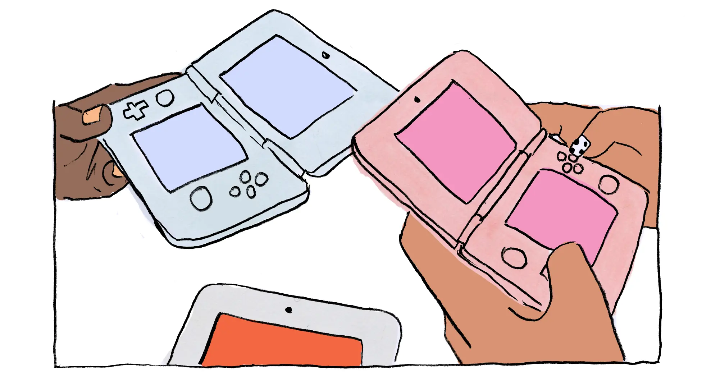
C’est à partir de là que le sentiment de rester connecté s’impose comme une nécessité, un moyen de se sentir moins coupé du monde. Les jeux et les interactions en ligne deviennent de plus en plus importants, façonnant une autre approche pour se sentir réunis.
« Les personnes ayant répondu ont le plus souvent signalé une augmentation des jeux multijoueurs : ‘ Je joue désormais à des jeux multijoueurs alors que je n’y jouais jamais auparavant.’ Cette hausse est motivée par un désir de se socialiser : ‘Je suis passé principalement aux jeux multijoueurs pour pouvoir me ‘faux-socialise’, ‘Je joue davantage à des jeux multijoueurs pour compenser le manque de communication en personne’[…]. Ainsi, cet aspect de l’évolution des pratiques de jeu est étroitement lié au thème de la socialisation. » 33. Sage-Journal, « Playing Video Game During the Pandemic and the Effect on Player Well-Being », Matthew Barr and Alice Copeland, 2021 [disponible en ligne].(traduit de l’anglais) 44. Les citations sont traduites dans ce mémoire grâce à un logiciel de traduction automatique (Deepl)
Plusieurs jeux vidéo populaires durant cette époque proposent cette interaction. Parmi eux Fortnite ou encore Call of Duty : Warzone, dont le but est de survivre tout en éliminant les autres équipes, dans un monde généré à chaque partie 55. The Washington Post, « The Game that got us through the pandemic », 2021 [disponible en ligne]. Les joueurs se retrouvent à avoir des interactions avec d’autres joueurs, inconnus ou non ; ils ne se voient pas, mais s’entendent, soulignant un autre type d’interaction sociale.
Ces jeux permettent de se sociabiliser dans un contexte de compétition et de jeu d’équipe, bien que certains jeux comme Fortnite aient proposé des concerts de différents artistes au sein de la plateforme, comme celui de Ariana Grande du 6 au 8 août 2021 intitulé Rift Tour.
Cette envie de se retrouver dans un univers en ligne commence à se diversifier : on retrouve par exemple des défilés de mode en digital ou des collaborations entre grandes marques et jeux vidéo, comme avec la marque Sandy Liang
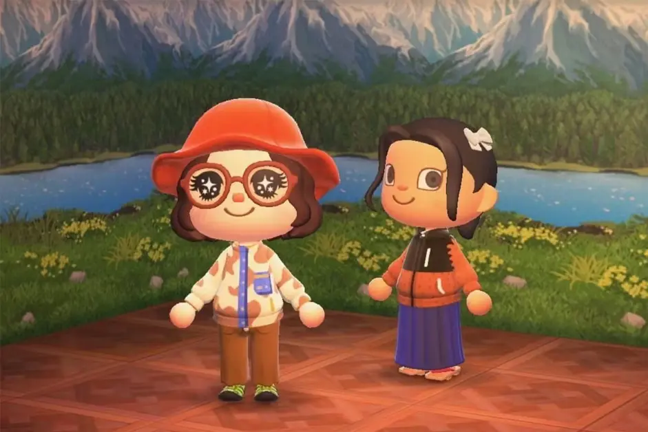
, qui confectionne des vêtements personnalisés pour le jeu Animal Crossing : New Horizon 66. Animal Crossing propose dans le jeu de personnaliser ses vêtements.Sandy Liang en avril 2020 organise une boutique éphémère pour permettre aux utilisateurs d’habiller leurs personnages avec la marque..
La situation du Covid-19, a profondément reconsidéré notre place dans le numérique, amenant les gens à se retrouver et à exister dans des espaces virtuels.
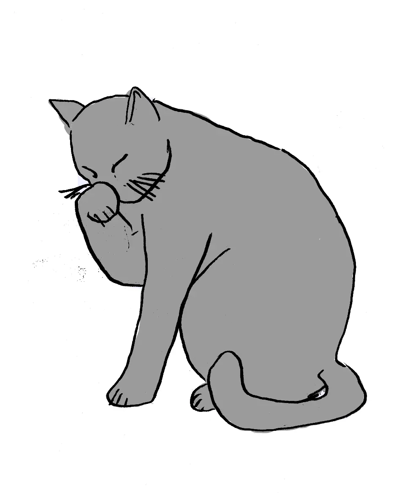
Animal Crossing
C’est dans cet environnement que le genre du ‘cozy-game’, quant à lui, va se populariser et se distinguer des autres jeux vidéo existants. Durant cette époque saturée d’informations inquiétantes et anxiogènes, les ‘cozy-games’, vont mettre en place des règles spécifiques pour des interactions plus saines, plus tranquilles et plus protectrices.
Et justement, rapprochons-nous et vérifions ce à quoi joue Amaya sur sa Nintendo. Comme écrit dans l’introduction, le jeu marquant la popularisation des ‘cozy-games’ durant cette période est Animal Crossing : New Horizon. Dans les nombreux écrits consultés durant ces derniers mois, l’importance de ce jeu apparaît clairement dans le questionnement autour de l’origine et de la définition de ce mouvement naissant.
Selon un article de Business Insider, le nombre de ventes de la Nintendo explose durant la pandémie, avec 12 millions de ventes, soit une hausse de 73,3 % sur un an en 2020, une hausse particulièrement portée par son jeu Animal Crossing 77. Buisness Insider, « Nintendo has sold more than 12 millions switches during the pandemic and it’s profits have tripled », Grace Dean, 2020. En mars 2020, la plateforme de jeux vidéo Twitch connaît également une hausse de 4 404 lives enregistrés sur le thème d’Animal Crossing, contre un nombre bien inférieur les années précédentes 88. Twitch tracker, « Animal Crossing : New Horizon », https://twitchtracker.com/games/509538.
Après sa mise à jour, il va permettre des interactions en ligne beaucoup plus calmes, où les joueurs peuvent faire visiter leur île à leurs amis ou à d’autres joueurs en ligne. Il devient un endroit où l’on peut pêcher, cueillir des pommes ou attraper des insectes à plusieurs.
Dans le cas d’Amaya, son moment préféré est de découvrir chaque jour, en avançant les heures et les jours de sa console, les différents articles sur la boutique Nook.
Globalement, les joueurs peuvent faire de nouvelles rencontres ou découvrir de nouvelles choses, que ce soit sur le thème de la culture et des traditions des autres joueurs, ou alors découvrir des souvenirs personnels et les goûts de chacun. Chaque aspect est mis en valeur dans la construction du village, ce qui permet à d’autres joueurs de voyager dans un temps où toute sortie est interdite. Les joueurs peuvent ainsi découvrirun quartier spécifique de Tokyo99. « Japanese citycore winter suburb », Bois Crossing, 2022, Youtube. « Japanese citycore winter suburb », @Bois Crossing, 2022, YouTube, un village d’enfance d’un inconnu ou une reconstitution d’un village inspiré du Seigneur des Anneaux
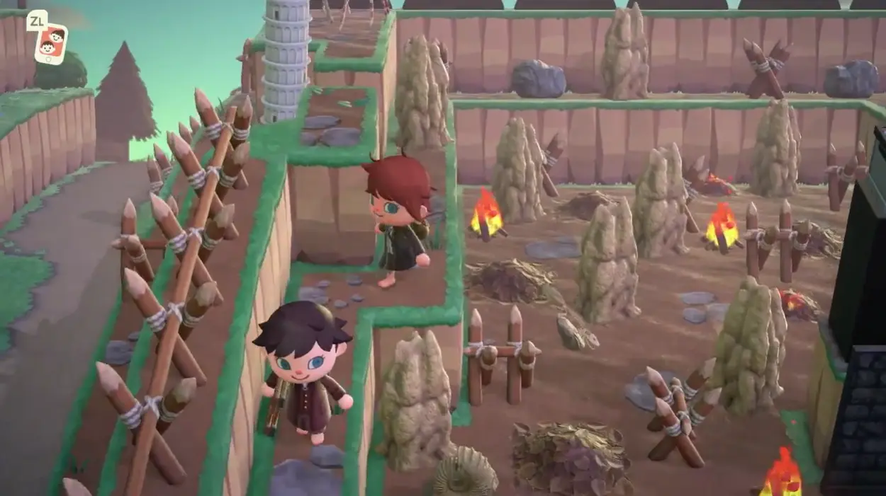
1010. « Lord of the Rings Inspired Island Tour : Animal Crossing New Horizon Island »,@Tania HeathHorizons, 2020, YouTube.
On remarque aussi que des festivals ou des rencontres sont organisés entre les joueurs, comme celui de la Pride, alors annulé durant cette période, qui trouve sa nouvelle place sur Animal Crossing. Le Muséum des Sciences Naturelles d’Angers, quant à lui, crée sa propre île pour faire une visite guidée du musée Animal Crossing. Les joueurs peuvent donc poser des questions sur différentes espèces d’insectes ou l’histoire des dinosaures. Dans le journal 20 minutes, Léo Tessier, le médiateur, explique : « Dans le jeu, chaque personnage doit alimenter son propre musée avec les objets et espèces qu’il récolte. Je me suis dit que ce serait rigolo de recréer le muséum. »1111. Journal 20minutes, « Coronavirus : fermé pour cause de confinement, le Muséum d’Angers organise des visites virtuelles...sur Animal Crossing », Julie Urbach, 2020 Dans son blog Animal Crossing Diaries, le National Videogame Museum propose aux utilisateurs d’écrire et de présenter leurs expériences et leurs témoignages sur le jeu, amenant à la création d’une communauté 1212. Blog et témoignages sur Animal Crossing Diaries, du National Video Game Museum, 2021.
« La quarantaine a rendu la dépression saisonnière particulièrement difficile, alors pour me détendre, j’ai fait une baignade au coucher du soleil et j’ai simplement profité des magnifiques graphismes » Sunset Swim écrit par @sarah
« J’ai passé la veille de Noël sur Animal Crossing avec deux de mes amis proches, puisque nous ne pouvions pas nous voir en personne. Nous avons visité nos îles respectives et fait ensemble une séance photo aux vibes de Noël. » Christmas Eve écrit par @alfieisntedgy (traduit de l’anglais).
C’est dans ce contexte que les ‘cozy-games’ vont se démarquer durant le confinement des autres jeux mainstream, en proposant une approche du jeu contraire aux jeux vidéo traditionnels. Tourner en rond dans un monde est privilégié, tout comme prendre son temps et ne rien chercher pour survivre. Ces jeux-là se présentent comme des terrains inclusifs et des ‘safe place’, où marcher et s’aventurer ne devient plus dangereux. Chacun peut jouer quelque soi son âge, son genre et son milieu.
Parler de Animal Crossing a son importance, afin de mieux comprendre la stratégie des jeux ‘cozy’ et comment ils se popularisent.
Nous verrons aussi au cours de ce mémoire, plusieurs jeux ‘cozy’ et leur manière d’aborder la société d’aujourd’hui, en mettant en valeur des concepts du prendre soin, du calme, du ‘selfcare’ et du temps infini.
"Animal Crossing est un jeu qui a marqué mon enfance et mon adolescence. Il m’a été transmis par mes cousines que je regardais jouer pendant des heures. Puis, un jour, j’ai enfin eu mon propre jeu sur DS. Tout y prend du temps : récupérer les fossiles, pêcher des poissons, attraper des insectes, acheter des meubles ou les vêtements du jour. Avec le recul, je me souviens qu’il m’arrivait de jouer uniquement pour accomplir ces petites tâches, parce qu’il y avait quelque chose de très satisfaisant à tout réaliser sans effort particulier. Il m’est arrivé d’être invitée chez des copines pour qu’on puisse jouer ensemble, nous permettant alors de visiter nos îles ou jouer à cache-cache. Par manque de temps et d’argent, ce n’est plus un jeu auquel je joue. Cependant, depuis le confinement et la sortie de Animal Crossing : New Horizon, j’ai beaucoup regardé de stream sur Twitch. Au-delà de la nostalgie que cela suscitait, ces vidéos m’ont apporté quelque chose ; généralement je les lance en arrière-plan pendant que je mange ou je fais la vaisselle. En un sens, c’est une autre manière de flâner et d’observer."
Témoignage Clara
Construire un Cozy-Game
Gameplay
Si Amaya prend plaisir à jouer à ce type de jeu, c’est que plusieurs stratégies et règles se mettent en place.
Les ‘cozy-games’, vont proposer une prise en main et une histoire en contraste avec notre époque. Les jeux dans ce genre sont lents. Cette lenteur à son importance dans le gameplay, puisqu’elle nous permet de prendre notre temps, de personnaliser ce qu’on veut, d’explorer sans limites de temps, et surtout, le jeu est facile à saisir et à manier.
Dans une vidéo explicative des ‘cozy-games’ et sur la façon dont ils se détachent des autres jeux, Agata Waszkiewicz, professeur.e.x agrégé à l’Université de Lublin en Pologne, remarque trois règles se mettant en place, qui vont permettre de définir ce type de gameplay. Iel rappelle, que ces jeux instaurent tout d’abord un sentiment de sécurité, par l’absence du risque, d’ennemis et de points de vie.
Ensuite, par une abondance dans les matières premières ; le personnage que nous incarnons ne manque de rien et n’en meurt pas pour autant.
Enfin, par la douceur de son gameplay, qui met l’accent sur la gentillesse et l’aspect rassurant des couleurs, des formes, des personnages, de la musique, ect. 11. « Agata Waszkiewicz : The Aesthetic of Cozy-Games », Games Now, 2023, Youtube
Quand on se concentre sur les esthétiques des ‘cozy-game’, on se rend compte que chaque univers est pensé pour calmer et rassurer l’utilisateur. Dans un article 22. Art Station, « Color Symbolism in Game Design ; Using Color Psycology to Elevate Player Experience », Francesco Saviano, 2025 se concentrant sur la psychologie des couleurs dans le jeu vidéo, on nous explique l’influence des différentes couleurs sur nos émotions et nos comportements.
De manière générale, une palette vive nous donnera de l’énergie, tandis que des teintes plutôt fades et grises peuvent nous mettre dans un état d’esprit inverse.
Plus précisément, on mettra des couleurs plutôt flash pour montrer un indice sur la scène, ou on se concentrera sur une couleur en particulier pour signaler un danger ou un mystère.
L’article précise encore que l’utilisation des couleurs sert à guider le joueur, pour raconter des histoires, on utilise souvent des couleurs chaudes pour exprimer un confort, ou une dominante de couleurs vertes pour l’exploration.
Dans le ‘cozy-game’, on retrouve ces mêmes mécaniques. En regardant de plus près, un motif se met en place ; les visuels sont doux, les couleurs pastel sont privilégiées, et les formes des objets sont rondes et pas pointues, marquant une volonté de ne pas blesser.
On retrouve aussi des designs reprenant une esthétique enfantine, ainsi que la présence d’animaux qui parlent ou qui deviennent des éléments essentiels et nous accompagnent tout au long de l’expérience.
Tout cela met en valeur des idées d’innocence et diminue les sentiments de danger et de violence.
« L’esthétique cosy est tout à fait reconnaissable : les couleurs sont vives et/ou pastel, les formes sont rondes, les personnages sont adorables (même s’il s’agit de monstres […]), la musique est douce, positive et entraînante. Il existe également d’autres éléments de conception : il n’y a pas de sursauts, d’événements chronométrés ou de compétitivité, et même si l’échec est présent, il n’est pas douloureux. » 33. Waszkiewicz A. & Tyminska M., « Cozy-Games and Resistance Through Care », The Polish Journal of Game Studies, 2024, 11 (1.) 7-16, https://doi.org/10.18778/2391-8551.11.01
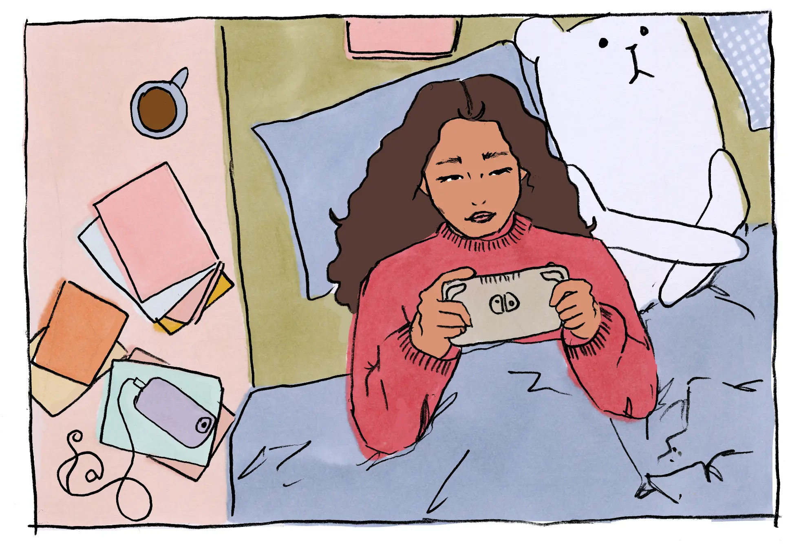
Ambiance
Avec l’émergence de ces jeux, des communautés se sont créées, notamment sur les réseaux sociaux. Si vous tapez en barre de recherche ‘cozy-games’, des contenus se présenteront à vous accompagnés d’une douce musique et d’une atmosphère relaxante. La voix du présentateur.ice est calme. Les jeux sont proposés comme des refuges à découvrir lorsque la vie est dure ou que le travail devient stressant.
« Voici quelques cozy games auxquels jouer les jours où l’on ne se sent pas bien, physiquement, mentalement, ou les deux à la fois […]. » @Cozy K games & hobbies sur TikTok
« Petit rappel bienveillant : ne culpabilise pas de ne rien faire de ‘productif’. Autorise-toi à te reposer et à recharger tes batteries, tu es capable d’y arriver. » @shea sur TikTok (traduit de l’anglais)
Les vidéos nous plongent dans un environnement cosy, où jouer devient agréable.
Dans l’ebook The Complete Guide to Cozy-Game de Liv Ngan, on nous propose, dès l’introduction, de nous mettre dans l’ambiance comme si nous étions devant un jeu ‘cozy’ pour avoir la meilleure session possible.
« Le confort est essentiel pour jouer dans les meilleures conditions. Voici les indispensables pour des sessions de jeu parfaites ! ». L’autrice nous présente six critères importants pour rentrer dans une ambiance ‘cozy’ ; porter des vêtements confortables, allumer une lumière tamisée, se retrouver dans un espace silencieux, avoir un endroit douillé pour se blottir, trouver un endroit confortable pour s’asseoir et enfin mettre des écouteurs pour s’immerger complètement dans le jeu 44. Extrait de « Cozy-Gaming » de Liv Ngan publié en 2024 par Wellbeck Children’s Book, HachetteUK.
Depuis un certain temps, se retrouver dans une ambiance pour se focaliser, méditer, ou imaginer prend de l’ampleur. Sur les réseaux, on trouve des playlists d’une heure ou plus afin de s’immerger dans un rôle. Sur YouTube on retrouve des titres : se promener dans la ville où tu as grandi 55. Playlist YouTube, « Walking through childhood town nostalgia », @nobodyplaylist, 2023 (traduit de l’anglais), ou encore, pov ; tu es une shojo main character où l’on se retrouve dans la peau d’un personnage de manga 66. Playlist YouTube, « pov : you’re a shojo main character », @yixuan, 2024.
Pour les ‘cozy-games’, nous essayons de jouer un rôle en reprenant les codes des roleplay ; on nous invite à se mettre sous une couverture chaude, avec des lumières tamisées et une boisson chaude ou fraîche à côté de nous. Un rituel se met ainsi en place même en dehors du jeu. Ici, le sens du mot ‘cozy’ dépasse l’écran et ne désigne plus une simple mécanique de jeu, mais une atmosphère, un mode de vie qu’on tente de s’approprier.
En faisant des recherches, on se rend compte finalement que le but des jeux vidéo, ici des ‘cozy-games’, des ambiances sur les réseaux, est d’échapper à notre routine. Oublier le stress du travail ou de l’école, fuir les informations anxiogènes et stressantes.
Ainsi, la mise en place d’univers contenant des ‘safe places’ et de la douceur est importante, puisqu’elle permet de « vivre » dans des lieux dénués de tout machisme, violence et pression sociale que beaucoup d’entre nous subissent dans leur quotidien.
« Comparée aux jeux, la réalité est déprimante. Les jeux concentrent notre énergie, avec un optimisme implacable, sur quelque chose que nous savons bien faire et que nous aimons faire. » 77. Page 38, extrait du livre « Reality is Broken : Why Games Make Us Better and How They Can Change the World ? », JaneMcGonial, publié en 2011 par Jonathan Cape Quand j’y pense, je remarque que j’utilise aussi des formes de rituels au moment de jouer à ce type de jeux.
Pour me sentir bien et pleinement confortable, j’ai toujours besoin d’aller à la salle de bain, m’habiller avec des vêtements d’intérieur et de ranger ma chambre afin de pouvoir m’immerger complètement dans l’expérience du jeu.
Impliquer mes sens fait aussi partie du rituel ; être ‘cozy’ va au-delà de se sentir bien dans l’univers que propose le jeu, il implique aussi de vouloir créer un environnement à l’extérieur. Créer mon espace devient un élément important afin de prendre plus de plaisir à jouer.
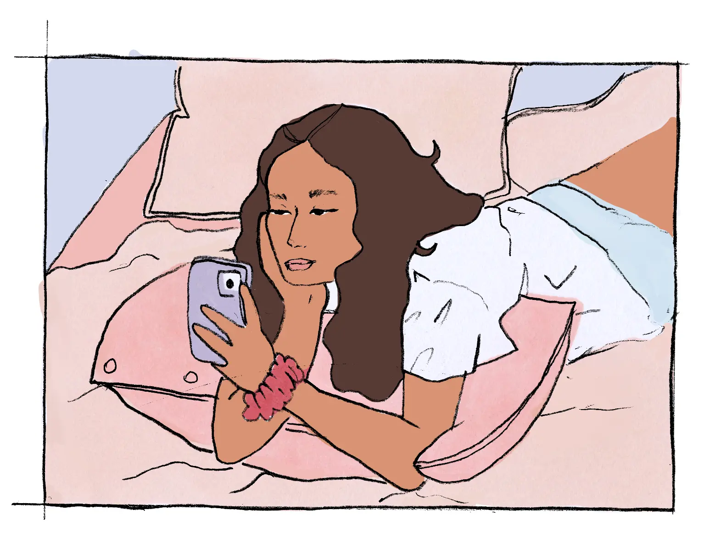
Sécurité
Pour comprendre ce besoin de sécurité chez les joueurs, ou même chez chacun de nous, il nous faut d’abord saisir la théorie des besoins de Maslow 88. HubSpot, « Pyramide de Maslow : Explication et utilisation de la pyramide des besoins », Ceara Landency.Les besoins les plus importants commencent par le besoin physiologique, les besoins vitaux de l’individu, autrement dit, une nourriture et une hydratation à volonté, ainsi que le fait de dormir, respirer et se vêtir.
Ce premier besoin étant accompli, on retrouve ensuite le besoin de sécurité, qui se définit par les choses stables autour de nous, que ce soit par le logement, l’argent ou l’atmosphère qui règne.
Suivi par le besoin d’appartenance, plus précisément par l’amitié ou la famille, le besoin d’estime. Enfin, on retrouve le besoin d’accomplissement, où l’individu est libre de ses capacités de création, lui procurant un sentiment de pouvoir réaliser ce qu’il souhaite.
C’est par cette pyramide que nous pouvons conclure notre sentiment de sécurité et de ‘cozy’ dans nos jeux, nos lieux de vie et notre quotidien.
« Selon la pyramide des besoins de Maslow, une théorie portant sur les besoins humains répartis en niveaux hiérarchiques, la satisfaction de ces besoins fondamentaux dans le jeu permet aux joueurs de se concentrer sur des aspirations de niveau supérieur, y compris l’accomplissement de soi.[...]Cela favorise une atmosphère virtuelle sereine, libérée des inquiétudes, dans laquelle les joueurs peuvent expérimenter avec une moindre crainte de l’échec. » 99. « An Exploration of Cozy-Games as Coping Mechanism to Manage Mental Well-Being », Naomi Nadja Alcocer Ludenas, publié en juin 2021 par Erasmus University Rotterdam(traduit de l’anglais)
Aujourd’hui, les ‘cozy-games’ restent toujours sur le marché et leur popularité ne faiblit pas.
« Nous pouvons observer cette tendance sur Steam, où de plus en plus de jeux sont étiquetés avec le qualificatif ‘cozy’ » 1010. The Guardian, « Cosy Video Games are on a unstoppable Rise, Will They Unleash a Darker Side ? », Nicole Carpenter, 2025 [disponible en ligne]. Selon The Guardian, et en regardant les données du SteamDB, de plus en plus de jeux reprennent ce terme. En 2021, il existait dans la plateforme 40 ‘cozy-games’, contre 377 en 2024 1111. Chiffres de SteamDB, « Steam Cozy-Game Releases by Month » [disponible en ligne].
De même, en observant l’évolution de l’intérêt des ‘cozy-games’ sur Google, on se rend compte de la montée croissante de ce type de jeu au fil des années.
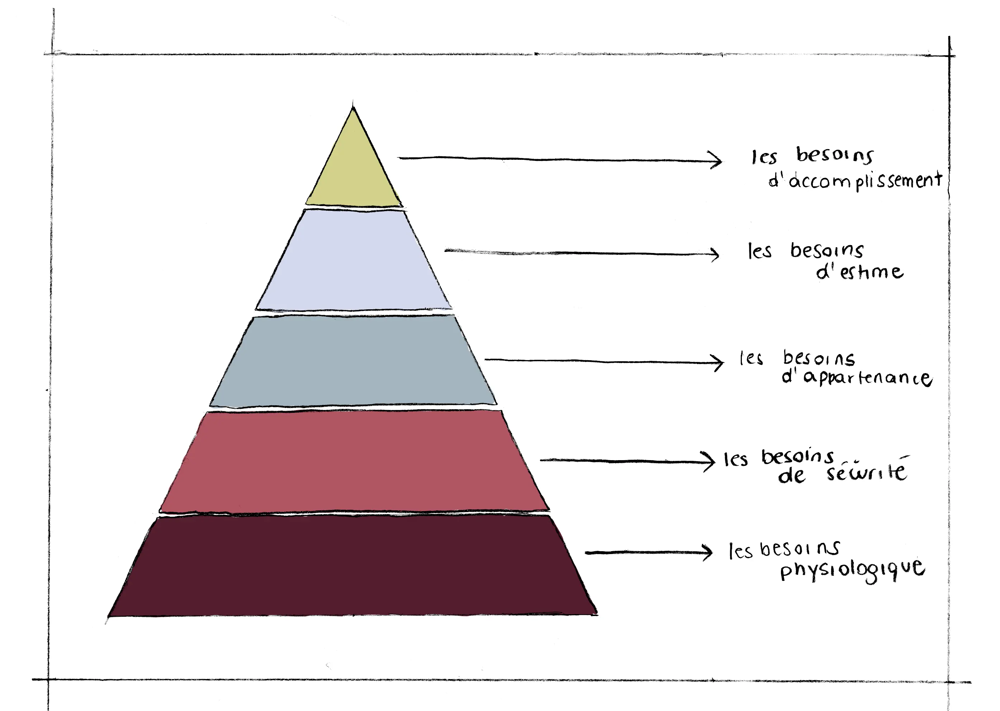
Au-delà du jeu Animal Crossing, d’autres jeux du même type ont fait leur apparition.
On retrouve Townscraper
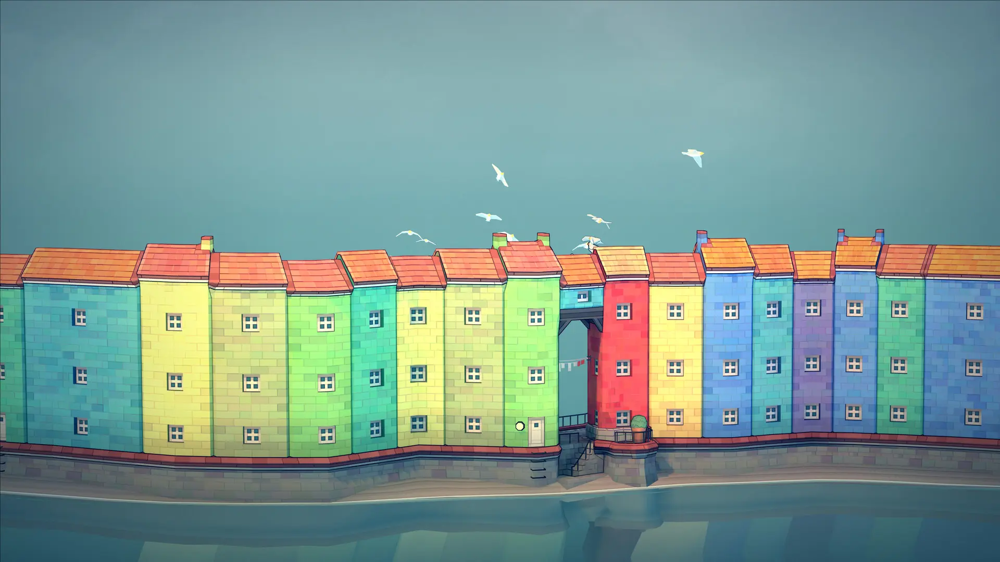
, où le but est de créer des villes selon nos goûts, de même que Tiny Glade, qui reprend ce même concept de construction de villages de manière libre et expérimentale. L’atmosphère y est douce, la musique relaxante, nous n’avons ni besoin d’argent, ni de ressources pour construire ce qui nous vient en tête. De même, dans Tiny Glade, des animaux nous accompagnent, comme des moutons ou des canards, sans qu’ils ne puissent être tués ou écrasés par nos constructions. Lorsque nous posons des briques au dessus d’eux, ils sont transportés par un parachute vers un endroit sûr. Ainsi, notre attitude et notre interaction avec l’environnement du jeu prennent une place centrale.
Dans A Short Hike
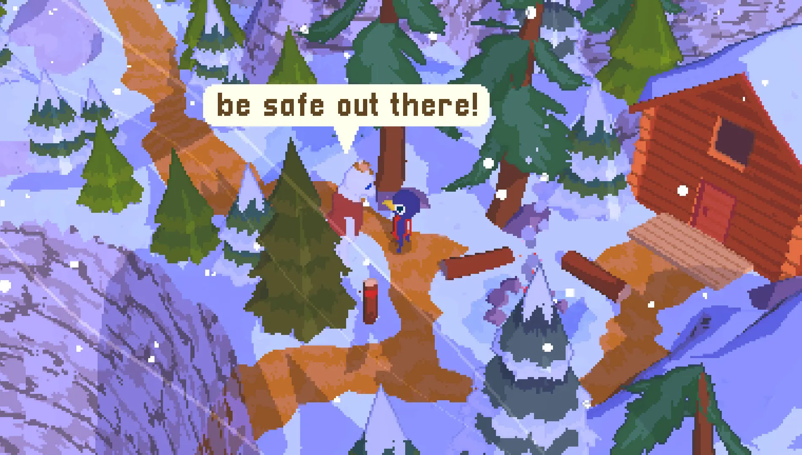
, nous incarnons un pingouin et explorons, escaladons, planons dans le parc provincial de Hawk Peak. Le but est de se sentir libre dans nos déplacements, nous n’avons pas le besoin de manger, tout est à notre disposition. Il nous suffit simplement d’explorer à notre rythme et de découvrir les secrets de ce parc.
D'Hier à Aujourd'hui
Jeux Barbie Gratuits
Pour continuer nos recherches, nous devons remonter dans le temps et plonger dans les années 2007.
Dans ce monde-là, Amaya a cette fois-ci terminé ses devoirs et se dirige vers le salon afin de pouvoir utiliser l’ordinateur familial, autorisé à certaines heures.
La routine est la même ; elle se connecte en ligne et tape sur la barre de recherche des mots simples et précis, « jeux de princesse maquillage », « princesse vêtement jeux », ou tout simplement « jeux gratuits en ligne ».
« Gratuit » devient le mot-clé pour se retrouver devant des sites offrant la satisfaction de pouvoir jouer à des millions de jeux de son choix.
Les URL les plus connues durant cette époque sont « EverythingGirl.com », « Barbie.com » ou « jeu.com », qui proposent à des enfants ou à tout âge de jouer à des jeux simples et rapides.
On retrouve différentes catégories, entre les sticks-man
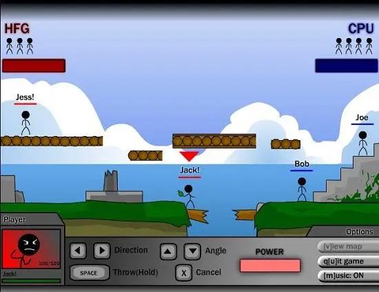
reprenant des jeux de combat ou de stratégie militaire, les Kissing Office
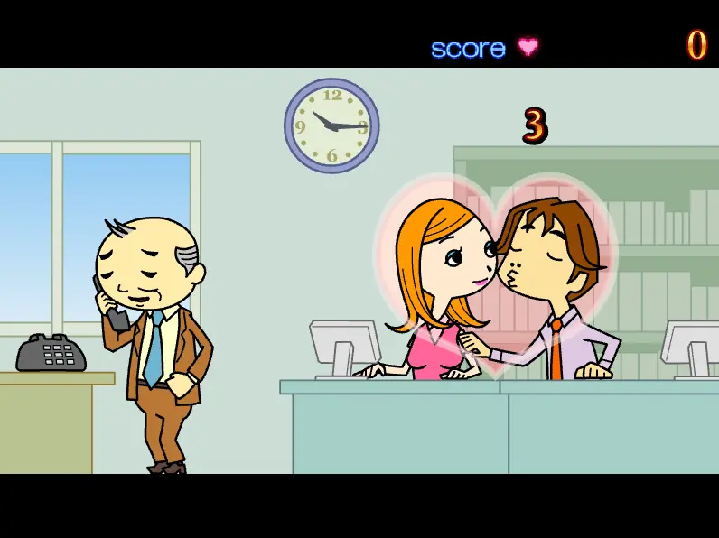
ayant pour but d’embrasser son collègue le plus possible pour accumuler des points, tout en évitant de se faire prendre par notre patron. Il existe aussi les chasses aux garçons de Romance Academy ; Heartbeat of Love
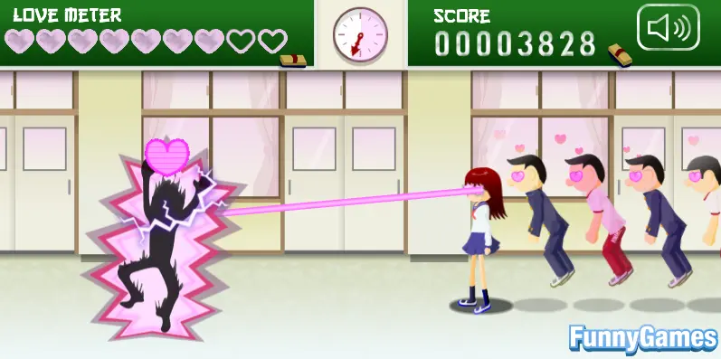
, dont l’objectif, grâce à nos yeux laser, est de créer une armée de garçons amoureux de nous.
Selon Interactive Software Federation of Europe, en 2010 la popularité de ces jeux, représente 71 % des joueurs.
« Les jeux gratuits sur les sites Web de jeux (55 %) et les jeux sur les réseaux sociaux (37 %) sont les types de jeux gratuits les plus populaires. » 11. Document par Interactive SoftWare Federation of Europe en 2010, « Video Gamers in Europe 2010 », page 7 « Section 6 : Online Gaming » Mais penchons-nous sur une catégorie précise , celle à laquelle joue Amaya en ce moment.
Les ‘Makeover’ ou les ‘Dress-up’, prennent une grande place parmi ces jeux en ligne. Selon la CNBC, en lançant « barbiegirls.com » en avril 2007, consistant à habiller et styliser des Barbies virtuelles, Mattel affirme que le site compte plus de 10 millions d’utilisateurs inscrits en ligne 22. CNBC, « Toys Take to the Web », Joseph Pisani, 2008 [disponible en ligne].
Bien que ces jeux aient connu une certaine popularité et qu’ils fassent partie du large choix de jeux proposés sur ces plateformes, ils n’ont pas toujours été pris au sérieux dans la culture mainstream du jeu vidéo, principalement masculine. À l’époque, et encore aujourd’hui, ils sont rarement évoqués ou considérés comme des jeux « non-sérieux », destinés à des joueurs plus occasionnels.
« La plupart des collections de jeux sont gérées par des hommes qui se concentrent sur l’archivage des jeux de leur propre enfance. Cela m’est apparu clairement il y a quelques années, lorsque j’ai visité un musée à Zwolle [Pays-Bas] dédié aux jeux vidéo et aux ordinateurs. Bien qu’il y ait eu d’interminables rangées d’étagères exposant des consoles et des jeux, les jeux avec lesquels j’ai grandi étaient en grande partie absents de sa collection. » 33. FeministClubAmsterdam, « Remembering ‘Pink-Game’ Re-Evaluating the Forgotten Legacy of Games ‘for Girls’ », Lisa Verberne, 2022 [disponible en ligne] (traduit de l’anglais)
Beaucoup de personnes se souviendront de Barbie Makeover Studio avec les quatre copines Madisson, Chelsea, Barbie et Nolee à relooker pour des occasions, ou encore Avatar Star Sue
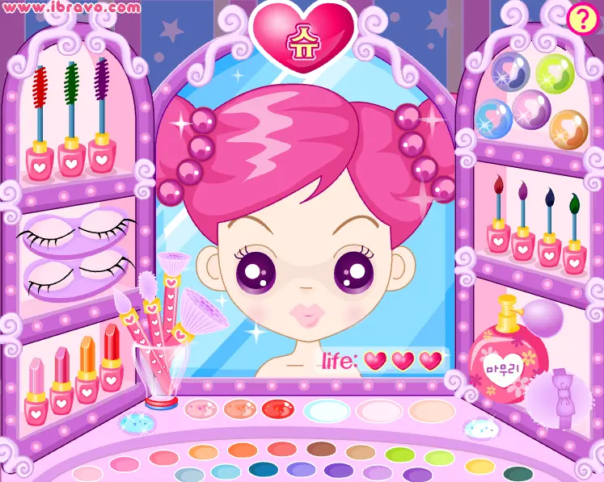
du studio iBravo, dont on suit les aventures du personnage avec des thèmes et des événements différents (relooking, soirées, ect.) 44. Les jeux cités peuvent se trouver dans des sites consacrés à l’archivage de ce types de jeux comme Numuki « Nostalgic Games that you can still play online » et Femicom Museum créee en 2012 permettant d’archiver les jeux-vidéo dit ‘trop rose’ ou ‘trop féminin
"Je suis au collège et nous avons enfin un ordi-nateur portable. Malheureusement mes parents ne veulent pas m’acheter les Sims 2... Apparement ça ferait ramer l’ordinateur d’installer des jeux dessus. J’y crois moyen. Je découvre alors le monde des jeux sur navigateur autrement dit, flashgames. Et plus précisément ceux du site JeuxdeFilles.com. Décoratrice d’intérieur, styliste pour des défilés de mode, coiffeuse, maquilleuse, serveuse, pâtissière. Voilà tous les métiers que je faisais à l’âge de 11 ans. Comme Hannah Montana j’avais une double vie."
Témoignage Caroline
Mais pourquoi prendre le temps de se pencher sur les ‘flash games’ pour parler du ‘cozy-game’ ? Quel est le rapport entre maquiller les ongles de Barbie, prendre soin du chien d’une star avec le ‘cozy-game’ ?
Aujourd’hui, bien qu’ils aient disparu du web ou qu’ils se retrouvent sous forme d’archives, ils continuent d’être retranscrits dans les jeux sur téléphone ou sous bien d’autres formes.
Si nous prenons en compte le gameplay de ces jeux, ils utilisent les mêmes mécanismes que nous connaissons avec les ‘cozy-games’ d’aujourd’hui. Un quotidien idéal, une consommation infinie, une prise de main facile, un rituel qui se met en place, ainsi qu’une esthétique spécifique.
En parlant d’Animal Crossing, durant la première partie, la mise à jour de ce jeu montre bien l’évolution dans la manière dont les gens ont de nouvelles approches dans le jeu vidéo.
Entre les villageois de 2005 dans Animal Crossing : Wild World
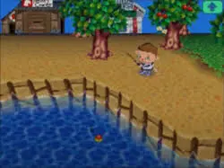
, qui se permettent d’être froids et de nous insulter alors que nous construisons l’île jour et nuit, et les villageois de 2020 dans New Horizon qui se montrent d’une gentillesse excessive, le gameplay traduit l’évolution des attentes.
J’éprouve une certaine nostalgie face au jeu des ‘pink-games’ ou ‘flash-games’ de l’époque. Je ressentais toujours une satisfaction de pouvoir habiller et coiffer les filles que j’admirais, et, d’un certain sens, je me rends compte aussi aujourd’hui des nombreuses problématiques qui se posent dans ces sites-là.
En regardant globalement le gameplay de ces jeux, on retrouve systématiquement un motif qui se met en place : la fille que nous relookons ou que nous incarnons est extrêmement mince, blonde aux yeux bleus. On nous demande de créer des contextes sociétaux où nous devons trouver des maris, nous occuper d’enfants. Il part d’un système patriarcal, où l’on apprend aux jeunes filles, via des jeux et toute la culture mainstream, leur soi-disant place dans la société.
« Le jeu vidéo apparaît comme un médium marqué par le sexisme à tous les étages, produit en grande majorité par les hommes pour les hommes. » 55. Page 20, Fanny Lignon, « Genre et jeux vidéo », Presses Universitaire du Midi publié en 2015
Dans certains jeux, on se retrouve à la place d’une fille à relooker, comme dans From Ugly To Pretty, avec de l’acné, les cheveux attachés et le style ‘geek‘, vus comme un défaut énorme qu’il faut corriger au plus vite pour rentrer dans les codes et, dans ce cas-là, pouvoir aller au bal de promo de son école.
Toutes ces règles se retrouvent inscrites sous des formes différentes, dans principalement tous les jeux de types ‘Makeover’ ou ‘Dressup’.
Dans une interview pour Loopsider, Cécile Ananian créatrice de Ma Bimbo, explique aussi cette problématique, « Les patrons m’ont demandé de dessiner une bimbo […] et j’ai dessiné une bimbo, à la base c’était plus quelque chose pour rigoler entre eux. » 66. Loopsider vidéo interview avec Cécile Ananian créatrice de Ma Bimbo en juin 2015. Les filles dans ce jeu doivent tout autant atteindre un poids idéal, se marier rapidement, avoir un travail pour satisfaire « leur mari ».
Ainsi, dans le jeu vidéo, des normes de beauté se mettent en place dès le plus jeune âge, dans un processus qui pointe du doigt celles qui ne rentrent pas dans les normes. On y retrouve des gestes et des propos racistes, homophobes et grossophobes.
« Et toutes les femmes ou presque subiront un jour ou l’autre, dès le plus jeune âge, les diktats de la beauté à travers des troubles alimentaires et une dysmorphie corporelle. » 77. Page 25 du livre de Jennifer Padjemi
Dans son livre, Selfie ; Comment le capitalisme contrôle nos corps, Jennifer Padjemi décrit cette capitalisation faite sur le corps des femmes. En parlant de pop culture, ce livre fait aussi penser à nos manières d’objectifier le corps de la femme dans le monde du jeu vidéo 88. Jennifer Padjemi, «Selfie ; comment le capitalisme contrôle nos corps», publié en 2024 par Éditions Stock.
« La pop culture fait régulièrement état de ce phénomène que j’aime appeler le ‘Ugly Betty’, plus souvent nommé le ‘revenge body’, qui consiste à subir un changement radical qui transformera nos vie. ‘On peut le faire’ On peut passer de cette personne banale ou laide à celle qui, après un régime et un relooking vestimentaire, est complimentée pour ses beaux yeux, sa nouvelle coiffure ou son nouveau corps. » 99. Page 58 du livre de Jennifer Padjemi Finalement, aujourd’hui, je me vois prendre la place du personnage féminin que je devais relooker et embellir en repensant à mes jeux d’enfance. Il était question de jeux basés sur des stéréotypes dangereux et des standards de beauté impossibles et misogynes.
De nombreuses femmes se retrouvent dans ce cas, plongées dans des critères ou des attentes irréalistes imposés.
Lors de mes recherches, j’ai pu consulter plusieurs témoignages sur les jeux auxquelles nous avons joué durant notre enfance. Par exemple, j’y ai découvert des histoires de jeunes filles qui, dans Animal Crossing : New Leaf, devaient faire attendre leur personnage au soleil pour que leur avatar puisse avoir la peau noire, cette fonctionnalité n’étant pas proposée lors de la création du personnage 1010. Une vidéo TikTok de @boarlet031 parlant de son expérience sur Animal Crossing durant son enfance.
Le Cozy-Game est-elle la petite soeur cool des Pink-Games
Dans un contexte social, les attentes des utilisateurs changent ; il devient essentiel d’amener les pratiques du gameplay vers des usages et des règles plus sains et inclusifs.
Lorsque la popularité des ‘cozy-games’ a pris de l’ampleur, le but recherché par les joueurs était avant tout un monde non stressant où tous les utilisateurs pouvaient se sentir bien et inclus dans un monde qui les appartenait.
En explorant chaque détail du gameplay de ces jeux, les personnages que nous incarnons n’ont ni diplôme, ni dettes, ni besoin de travail pour rentrer dans les codes de la société. Dans certains jeux, il est vrai que nous reprenons les codes de la vie de tous les jours et du travail, mais cette simulation reprend une ambiance de romantisation de nos routines ; on se retrouve dans un Konbini ou une pizzeria
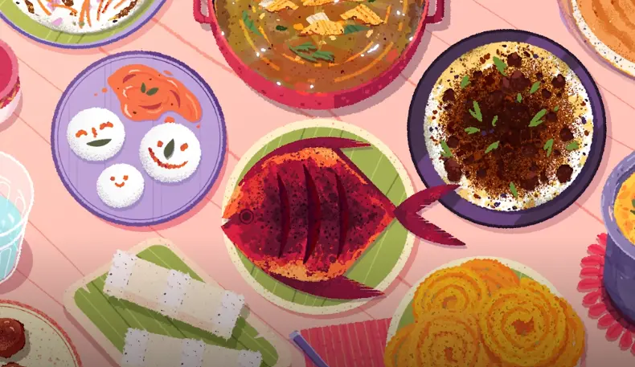
, nous avons le temps de faire nos tâches, la vie est calme et rassurante, et surtout les clients sont bienveillants 1111. Jeux sur la plateforme Steam représentant des gestes de la vie quotidienne : « InKonbini » de Nagai Industries et « Bonne Pizza, Super Pizza » de TapBlaze.
Le ‘cozy-game’ se met alors à romantiser une vie et ses routines, vues comme répétitives, ennuyeuses et surtout anxiogènes. « Comparée aux jeux, la réalité est improductive. Les jeux nous donnent des missions plus claires et un travail plus satisfaisant et concret » 1212. Page 55 du livre « Reality is Broken : Why Games Make Us Better and How They Can Change the World » de Jane McGonial publié en 2011 par Jonathan Cape.
Le monde dans lequel nous entrons est mené par une motivation d’une vie meilleure et plus douce. Dans Stardew Valley
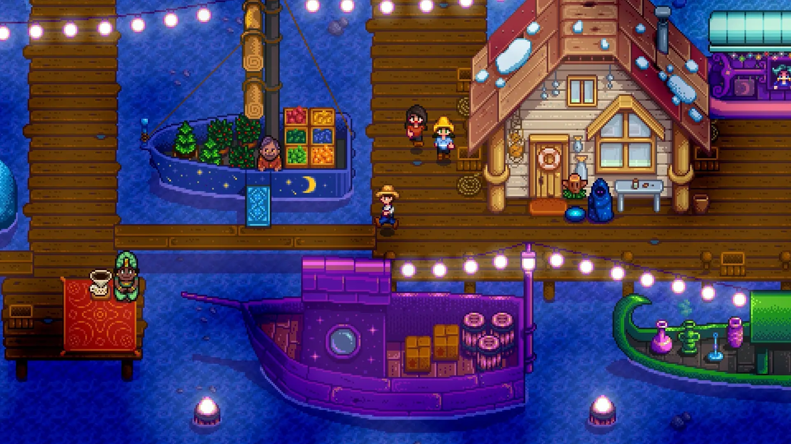
, nous héritons de la maison de campagne de notre grand-père pour nous lancer vers une nouvelle vie. Dans KindWords
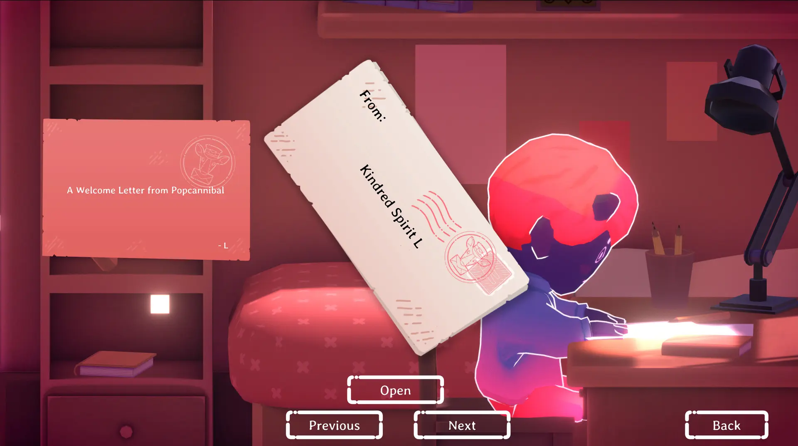
, la vie est dure et stressante alors, par nos lettres, nous la rendons plus douce en encourageant ou en trouvant les bons mots.
Le gameplay cherche à faire le bien.
« Il décrit une situation dans laquelle une esthétique chaleureuse accompagne un message ou des thèmes chaleureux. » 1313. Waszkiewicz A. & Tyminska M., « Cozy-Games and Resistance Through Care », The Polish Journal of Game Studies, 2024, 11 (1.) 7-16, https://doi.org/10.18778/2391-8551.11.01. Dans cet essai, on nous introduit Audre Lorde, une poétesse queer et féministe, qui parle de l’idée de prendre soin et du doux comme des outils politiques et actes de résistance. Elle écrit en 1988 : « Prendre soin de moi-même n’est pas de l’égocentrisme, c’est de la préservation, et c’est un acte de guerre politique. » 1414. Extrait du livre « A Burst of Light » de Audre Lorde publié en 1988.
Prendre son temps et apprendre à prendre soin sont des éléments qui prennent une grande place dans la manière d’aborder les sujets dans les différents types de jeux ‘cozy-game’. Au lieu d’aller vite, d’avancer en même temps que notre société et de plonger dans des stéréotypes angoissants, le ‘cozy-game’ va au contraire offrir des espaces pour questionner notre place dans le ‘selfcare’. 1515. FemmageZine, « Self-Care isn’t a face mask : The Commodification of Audre Lorde’s Self-Care », Skylar Senders, 2025 [disponible en ligne] Coffee Talk
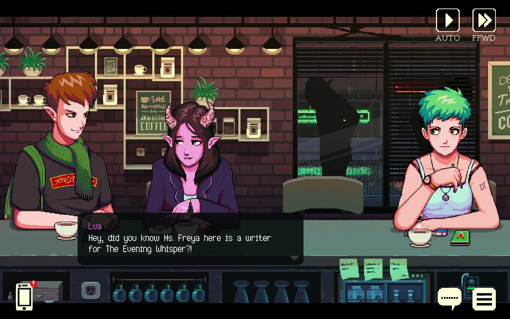
, par exemple, est un jeu qui propose un gameplay qui prend son temps, on nous propose d’écouter des personnages parlant de leurs soucis et de les aider en leur servant une boisson chaude. Être dans un espace confort où les gens écoutent à une importance.
Dans Spirit Lofi Session, on customise sa chambre, son ambiance et son personnage afin d’être productifs à sa manière et de prendre soin de soi. Des playlists et ambiances sonores, nous sont aussi proposées pour nous concentrer ou nous calmer.
Les gestes de bien-être ne s’attardent pas seulement dans les choses que nous consommons, au contraire, le bien-être s’attarde aussi par des moments de pause, de discussion, de recueillement et de résistance.
Nostalgique à 23 ans
Finalement, en retraçant le temps d’Amaya, on se rend compte des processus qui se mettent en place dans le rapport des utilisateurs face aux jeux vidéo.
Il a été important de parler des ‘pink-games’ et des ‘flash-games’, pour montrer que le gameplay ne s’efface pas et ne s’oublie pas, mais prend différentes formes.
Même en grandissant, certains codes ne se perdent jamais ; nous cherchons toujours à reprendre certains gestes et contextes nous ayant suivis quand nous étions enfants. Les jeux de ‘dress-up’ ou de personnalisation d’avatar reprennent, par exemple, les mêmes principes que lorsque nous habillons nos Polly Pockets ou nos jouets articulés.
De la même manière, Lisa Verberne explique dans son article que les jeux au gameplay libre s’appuient sur des mécanismes imaginatifs : « D’autres séries telles que Les Sims ou Animal Crossing ont également permis aux joueurs d’exprimer leur créativité en leur donnant la possibilité de créer leur propre scénario. » 1616. FeministClubAmsterdam, « Remembering ‘Pink-Games’ Re-Evaluating the Forgotten Legacy of Games ‘for Girls’ », Lisa Verberne, 2022 [disponible en ligne]. Enfants, nous inventions des histoires, des personnages ou des situations à partir de notre imagination.
Ou encore, des jeux comme Tiny Glade
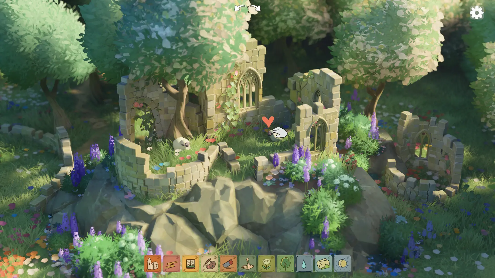
ou TownScaper
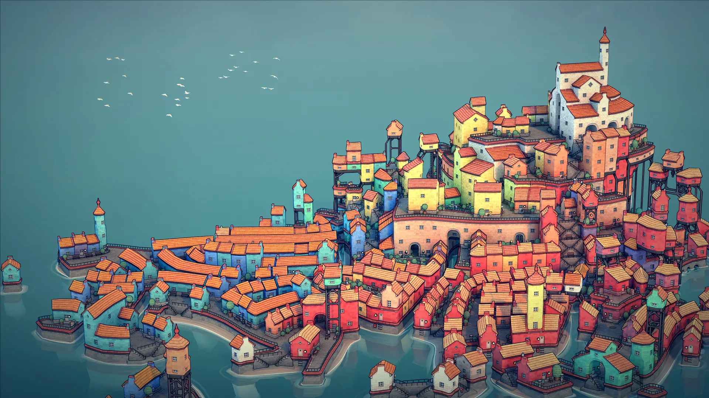
nous invitent à construire des villages où des maisons sans aucune limite, ni contrainte, comme certains d’entre nous auraient pu le faire avec des Kalpla ou des Legos.
Quand nous jouons aux ‘cozy-games’, nous pouvons remarquer qu’ils reprennent ces mêmes codes afin de les amener vers des pratiques réconfortantes.
Dans Dordogne, nous aidons une jeune fille à redécouvrir son passé et celui de sa grand-mère en explorant les lieux et l’histoire de celle-ci durant les vacances.
On se retrouve à faire des photos, écrire un journal, collectionner des objets, enregistrer des sons, se faire des amis, dans un univers qui s’inspire des codes des vacances d’été.
Dans Garden Path
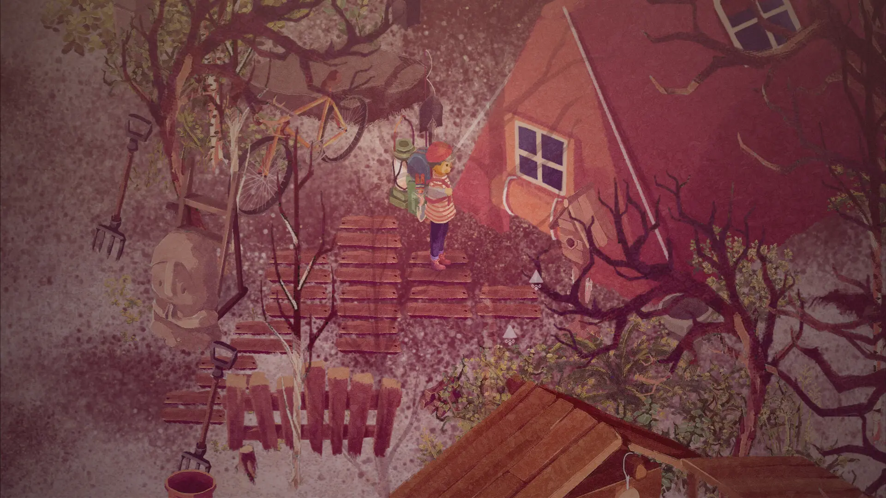
, l’esthétique est très enfantine, presque naïve et les visuels peuvent nous faire penser à des livres d’enfant. Nos interactions dans le jeu sont simples ; nous nous lions d’amitié avec des légumes. Reprenant ainsi les codes d’innocence et d’imagination.
Bien sûr, aucune enfance ne se ressemble, mais elle se généralise par des gestes communs. Explorer, imaginer, collectionner, deviennent des mots-clés du gameplay.
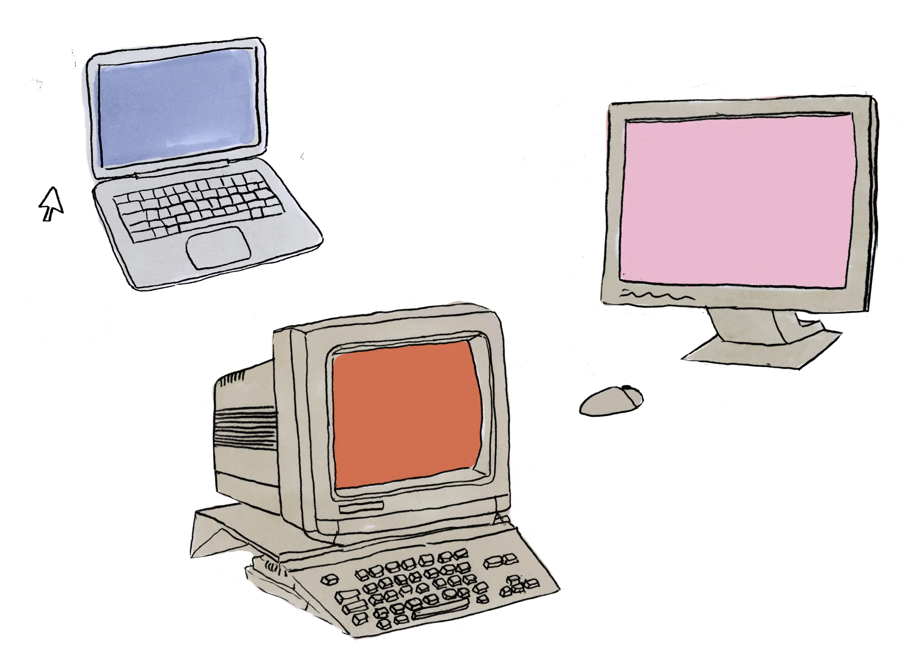
En plus d’avoir parlé du sentiment de sécurité, des rituels mis en place, de la douceur omniprésente, on se rend compte aussi que la nostalgie joue un rôle important dans la fonctionnalité des ‘cozy-games’.
La nostalgie prend une grande place dans notre société, selon une étude de la GWI. en 2023, 56 % de la génération Z aux États-Unis, se disent nostalgiques des années 2000 1717. Chiffres de GWI., « How Are GenZ and Millenials driving nostalgie ? », Stephanie Harlow, 2023 [disponible en ligne].
Il est vrai que ce mot peut faire penser à des thématiques tristes et déprimantes ; on repense à un passé que l’on aimerait revivre, ou à une odeur qui nous rappelle une personne chère. Rien que l’étymologie du mot nostalgie reprend l’idée de pensées douloureuses, nostos signifiant, « le retour » en grec et algia « la douleur » 1818. Wikipedia, « Nostalgie (Sentiment) », étymologie et définition.
Mais dans sa globalité, la nostalgie prend des formes positives, nous aidant à retrouver un certain réconfort et de retrouver des émotions que nous vivions dans le temps.
Dans un article d’El Pais 1919. El Pais, « Modern Nostalgia : Why do young people ache for a past they never lived », Ixone Arana, 2023 [disponible en ligne], Ixone Arana nous explique que la nostalgie peut aussi offrir des principes d’adaptation au présent. En se souvenant du passé, on permet au présent de guérir. Ballesca, coordinateur d’un service de santé mentale pour les enfants et adolescents à Barcelone, explique aussi ; « La nostalgie repose en grande partie sur le fait que notre mémoire des événements passés est quelque peu déformée. Nous avons tendance à mieux nous souvenir des bons moments. ».
L’article ajoute que la culture mainstream reprend ces codes-là afin de toujours raviver cette émotion. Aujourd’hui, on observe par exemple un nombre croissant de remakes de séries ou de films, ou encore le retour d’objets du passé comme les vinyles ou les appareils photo argentiques, malgré la présence de nouvelles technologies. Apportant ainsi un côté rassurant face à l’incertitude du présent.
« […]une dynamique qui se manifeste par la prolifération de remakes cinematographiques, de séries au style rétro et de reformation de groupes musicaux anciens, reflétant une culture obsédée par le recyclage du passé plutôt que par l’innovation » 2020. Livre de Grafton Tanner, « Foverism ; quand le monde devient un jour sans fin », publié par Imho en 2024.
La nostalgie, peut nous faire aussi repenser à une période de notre vie où nous n’avions pas de grandes responsabilités, pas d’impôts à payer, où l’avenir ne nous effrayait pas, et où le temps semblait passer plus lentement.
Face à une société qui va mal, marquée par le réchauffement climatique, les crises économiques, la montée de politiques fascisantes et des guerres, certains d’entre nous se réfugient vers des temps où ses questions étaient perçues plus naïvement.
Toutefois, il est important de rappeler que cette perception repose souvent sur des expériences privilégiées, chaque individu ayant connu une enfance différente.
Ainsi, pour reprendre notre propos sur les ‘cozy-games’, on remarque une volonté d’amener des expériences plus tranquilles en valorisant l’innocence d’une vie douce.
Au-delà du gameplay, les formes du ‘flash-game’ et du ‘pink-game’ évoqués plus haut, se retranscrivent aujourd’hui sous des univers plus inclusifs, révélant une évolution dans la manière dont les utilisateurs abordent aujourd’hui le jeu vidéo.
Au moment où Amaya joue, les ‘flash-games’ concernent particulièrement des utilisateurs de son âge, de par leur gratuité et leur accessibilité, mais aussi parce qu’ils se basent souvent sur des personnages plus familiers à des enfants ou adolescents en s’appuyant sur des références populaires comme des pop stars telles que Demi Lovato ou Zac Efron, des licornes, des sticks-man qui représentent des personnages aux traits simples, etc. 2121. « Dress-up, Kissing, and Girly Flash Games », Dream Jelly, 2023, YouTube Dorénavant les utilisateur.ices ont changé, 60 % des joueurs du ‘cozy-game’ sont des femmes adultes 2222. Chiffres de IntelMarket Research « Online Cozy-Game Market Growth Analysis Dynamics Key Players and Innovations Outlook and Forecast 2025-2030 ». Bien que les règles de base restent les mêmes, le gameplay a tout de même évolué vers une forme plus inclusive.
Jouer à un ‘cozy-game’ ne nous infantilise pas, au contraire, malgré l’aspect mignon et doux, les jeux se construisent sur des terrains adultes.
Les codes ont changé, et les adultes se réfugient vers des jeux capables de réguler leur stress et d’offrir une échappatoire à leur vie de tous les jours.
Le jeu vidéo, en lui-même, permet de développer des supports positifs dans nos routines et dans notre santé mentale. Dans son ouvrage, Jane McGonial explique comment le jeu vidéo peut transformer nos manières de vivre, et surtout, comment il peut nous aider à devenir meilleurs lorsqu’il est utilisé de la bonne manière ; « Les jeux nous apprennent à créer des opportunités pour accomplir des tâches stimulantes, choisies librement, qui nous poussent à repousser nos limites, et ces leçons peuvent être transposées dans la vie réelle. Nos problèmes les plus urgents, tels que la dépression, le sentiment d’impuissance, l’aliénation sociale et l’impression que rien de ce que nous faisons n’a vraiment d’importance, pourraient être efficacement résolus en intégrant l’idée que rien de ce que nous faisons n’a vraiment d’importance. » 2323. Page 36 du livre de Jane McGonial, « Reality is Broken : Why Games Make Us Better and How They Can Change the World ? », publié en 2011 par Jonathan Cape(traduit de l’anglais).
Dans un article pour Reuters, Michael Wong, professeur adjoint au département de psychiatrie et neurosciences comportementales de l’université McMaster, écrit dans une étude publiée en 2021 que les utilisateurs jouant à des jeux de type casual pouvaient ressentir les même bienfaits qu’avec vingt minutes de méditation : « À notre grande surprise, il n’y avait aucune différence entre les deux types d’interventions. En ce qui concerne la tension artérielle et la fréquence cardiaque, il n’y avait aucune différence statistiquement significative entre le fait de jouer à un jeu vidéo et celui de pratiquer la méditation. » 2424. Reuters, « Cozy Comfort : New Research back up what gamers have thought for years video games can be an antidote to stress and anxiety », Tiana McGee(traduit de l’anglais).
Ces recherches montrent alors l’importance de l’expérience de jeu et comment elle nourrit des routines favorisant la détente, la gestion du stress et l’accomplissement de soi.
Les ‘cozy-games’, nous apprennent à prendre notre temps, à romantiser des routines ou des moments de vie, à vivre avec des ressources infinies, sans stress ni violence.
Ils deviennent alors des éléments qui contribuent au bien-être des joueurs et leur manière d’aborder la vie réelle.
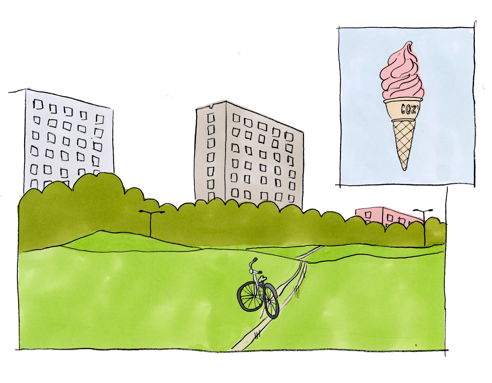
Douceur pour notre société
En suivant Amaya tout le long de ce mémoire, nous avons pu observer les différents éléments mis en place dans la création d’un jeu cozy. Le but de ces jeux étant principalement d’instaurer des mécanismes et des éléments apaisants pour le confort des joueurs.
Le gameplay s’applique à répondre à des besoins simples, qui permettent à l’utilisateur de trouver son espace en créant des univers sans danger, ni machisme, homophobie et racisme, où il peut se retrouver dans un environnement où la douceur domine.
Nous avons vu dans les différents chapitres l’importance de créer des ambiances et des lieux ‘safe’, de comprendre comment appliquer des règles saines et d’apporter des éléments d’enfance. Ce sont des critères indispensable pour qu’un jeu soit ‘cozy’.
La création et la popularisation de ces jeux prouvent bien la demande et les attentes d’une société en quête de réconfort.
De manière générale, notre environnement social, nos habitudes de consommation modèlent nos comportements et nos émotions ; c’est l’effet miroir 11. Sabine Hernandez, «Qu’est-ce que l’effet miroir?», Académie Aix-Marseille, 2023 [disponible en ligne]. Nous reflétons, à travers ce que nous voyons, entendons et achetons, la manière dont une société évolue. Par exemple, sur les réseaux sociaux, l’esthétisation des extrêmes prouve une hausse de radicalisation. On se retrouve face à des contenus racistes, homophobes, glorifiant des pratiques incel, avec des hommes donnant des leçons à de jeunes garçons sur la manière dont ils doivent se comporter avec les femmes. On retrouve aussi les ‘tradwife’, qui romantisent le « rôle » des femmes durant les années 60 ; une femme se devant de rester à la maison et de préparer les repas pour son mari, à qui elle serait soumise.
La montée aussi des ‘trends’ utilisant des termes comme le ‘core’, le ‘girl’ ou le ‘-ification’, montre bien la volonté des personnes de chercher à s’identifier ou se créer des repères 22. Mina Le, « Let’s talk about the rise of ‘-core’ and ‘girl’ aesthetics », 2023, YouTube.
Les tendances comme le ‘cleangirl aesthetic’ ou l’‘anti-âge core’ révèlent une société angoissée par le futur et qui cherche à se rassurer à travers les tendances, la romantisation d’idées et par la surconsommation, tout en détruisant en même temps certaines cultures avec l’instrumentalisation par exemple du matcha ou du yoga.
Le ‘cozy-game’ représente sans doute aussi une tendance et reflète ce dont les gens ont besoin aujourd’hui. Mais il représente aussi l’opposé des normes attendues, bouleversant les codes de notre société en créant des ‘safe places’, loin des réseaux sociaux ou des courants esthétiques, en mettant en avant une inclusivité et une lenteur, contraire aux attentes de la société.
Ainsi, le ‘cozy-game’ finira-t-il par nous enfermer dans une illusion utopique ? S’arrêtera-t-il dans nos chambres ? Risquerons-nous de subir le choc en plein fouet de la réalité ?
Agata Waszkiewicz et Marta Tymińska dans leur essai Resistance Through Care 33. Waszkiewicz A. & Tymińska M., « Cozy-Games and Resistance Through Care », The Polish Journal of Game Studies, 2024, 11 (1.) 7-16, https://doi.org/10.18778/2391-8551.11.01 parlent de l’importance de prendre son temps et de prendre soin en les comparant à des actes de résistance et des actes politiques, tout en prenant exemple du gameplay des ‘cozy-games’, « Compte tenu de leur émergence en tant que contre-genre aux jeux d’action et de tir traditionnels, violents, rapides et compétitifs, il est difficile de ne pas voir les jeux cosy comme le reflet de l’évolution des besoins des joueurs actuels [...] remarquent une qualité importante des jeux cosy, qu’ils appellent le « jeu régénérateur », qui suscite des sentiments tels que l’affection, la curiosité et l’engagement, qui non seulement procurent du repos aux joueurs, mais les incitent également à être attentifs à l’environnement naturel en dehors du contexte du jeu. »
Dans un autre essai publié par Naomi Nadja Alcocer Ludeñas 44. « An Exploration of Cozy-Games as Coping Mechanism to Manage Mental Well-Being », Naomi Nadja Alcocer Ludeñas, publié en juin 2011 par Erasmus University Rotterdam, des participants tout le long de l’enquête expliquent leur manière d’utiliser le ‘cozy-game’. Certains s’en servent comme récompense, permettant de donner un bout de bien-être à leur vie ; « Je considère le jeu comme une récompense après avoir accompli mes tâches quotidiennes […] Je joue généralement pendant une courte période, entre 20 et 30 minutes. ».
Il devient un support pour la santé mentale et le bien-être des joueurs. « Cette forme d’évasion significative n’est pas simplement une distraction, c’est une expérience transformatrice où les joueurs rencontrent des éléments du monde réel, jouissent d’une autonomie et s’adonnent à de nombreuses possibilités d’apprendre, de grandir et d’améliorer leur bien-être mental par le jeu. ».
En jouant, ce sont les petits gestes que j’applique et les routines régulières de bien-être, en prenant soin de moi et des autres, qui donnent du sens à mon quotidien et ainsi encouragent l’émergence d’actions plus douces pour la société.
Bien sûr, il est important de souligner que chacun est libre de choisir n’importe quel jeu vidéo pour se détendre et se créer des espaces cosy.
Le ‘cozy-game’ ne représente pas une seule manière d’atteindre le confort, d’autres peuvent ressentir les mêmes sentiments dans des jeux comme Zelda ou Minecraft. Jane McGonigal souligne dans son livre l’importance du jeu vidéo en lui-même comme une manière de mettre en valeur des sentiments d’accomplissement personnel et apportant ainsi des moments positifs dans nos vies.
Si j’ai eu l’envie d’écrire sur les ‘cozy-games’ dans ce mémoire, c’était à la fois pour présenter et explorer plus en profondeur des jeux auxquels j’aime jouer et pour y trouver ma propre légitimité.
Il nous appartient désormais de créer des univers doux pour contribuer à un monde meilleur.
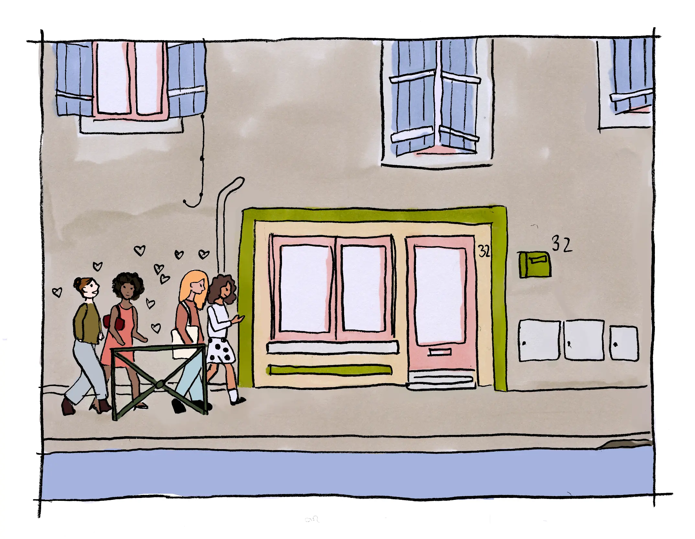
Bibliographie
Thèse/Essais
BARR M. & COPELAND STEWART A., Playing Video Games During the Covid-19 Pandemic and Effects on Player Well-Being, Games and Cuture, Volume 17 Issue 1, page 122-139, 2021/2022
BODI Bettina, The Duality of Cozy-Games : Cozy Agency, Neoliberalism and Affect, Replay ; The Polish Journal of Game Studies, 2024
FANG Zhaoyi, Cozy Games : How Covid-19 Affected Game Playing Among College Students ?, B.A in Sociology, The Ohio State University, 2021
NADJA ALCOCER LUDENAS Naomis, Nurturing Well Being Through Play ; An Exploration
of Cozy-Game as Coping Mechanism to Manage Mental Well-Being, Master Media Studies, Erasmus University Rotterdam, 2024
WASZKIEWICZ A. & TYMIŃSKA M., Cozy Games and Resistance Through Care, Replay ; The Polish Journal of Game Studies, 2024
Livres
CAILLOIS Roger, Les jeux et les hommes, Éditions Gallimard, 1958
BREY Iris, Le Regard Féminin, une Révolution à l’écran, Édition de l’Olivier, 2020
DUFOURMANTELLE Anne, Puissance de la Douceur, Paris, Édition Payot & Rivages, 2013
DREAM JELLY, The Imagine Games Empire, 2023,YouTube
GAMES NOW !, Agata Waszkiewicz : The Aesthetic of CozyGames, 2023, YouTube, YouTube
LOOPSIDER, Video Interview avec Cécile Ananian créatrice de ma Bimbo, 2025
MAGGIES PLANET, Le jeu vidéo Stardew Valley, 2024, TikTok
MAGGIES PLANET, Les Lettres de Maman dans Animal Crossing, 2024, TikTok
MINA LE, Let’s Talk about the Rise of ‘-core’ and ‘girl’ aesthetics, 2023, YouTube
Podcast
NOT YOUR MAMA’S GAMER, Épisode 246 : Your Cozy Games Are Problematic, 2023, Spotify
ZOOM ZOOM ZEN, Foverism ; sommes-nous dans l’ère de la nostalgie ?, 2025, RadioFrance
Site-Web
SCREENRANT, What Cozy-Games are & What Cozy Gaming Really Means ?, Carrie Lambersten, 2024, lien[consulté le 03/25]
GAMESINDUSTRY.BIZ, What are Cozy-Game and What Makes Them Cozy ?, Colin Campbell, 2020, lien[consulté le 03/25]
BUSINESS INSIDER, Nintendo has sold more than 12 million switches during the pandemic and it’s profits have tripled, Grace Dean, 2020, lien
[consulté le 03/25]
GameVision Europe, Prepared for the Interactive Software Federation of Europe, Video gamers in Europe 2010, 2010 [consulté le 09/25]
INSEE, Moins à risque face à la Covid 19 les jeunes adultes subissent les contre-coups économique et sociaux de l’épidémie, 2021, lien [consulté le 03/25]
UK INTERACTION ENTERTAINMENT, Power Play Report Shows Social and Emotional Benefit of Game, 2023, lien [consulté le 04/25]
THE WASHINGTON POST, The game that got us through the pandemic, 2021, lien [consulté le 09/25]
NYLON, Sandy Liang on hosting a pop-up on Animal Crossing & Virtual fashion, Erika Harwood, 2020, lien [consulté le 04/25]
ARTSTATION, Color Symbolism in Game Design ; Using Color Psycology to Elevate Player Experience, Francesco Saviano, 2025,
lien [consulté le 10/25]
JOURNAL 20 MINUTES, Coronavirus ; fermé pour cause de confinement, le Museum d’Angers organise des visites virtuelles...sur Animal Crossing, Julie Urbach, 2020, lien [consulté le 03/25]
HUBSPOT, Pyramide de Maslow ; explication et utilisation de la pyramide des besoins, Ceara Landecy, 2025, lien [consulté le 05/25]
STEAMDB, Steam Cozy Game Releases by Month, lien [consulté le 10/25]
THE GUARDIAN, Cosy video are on an unstoppable rise, will they unleash a darker side ?, Nicole Carpenter, 2025, lien [consulté le 09/25]
CNBC, Toys Take to the Web, Joseph Pisani, 2008, lien [consulté le 10/25]
NUMUKI, Nostalgic Games that you can still play online, 2019, lien [consulté le 02/25]
FEMICOM MUSEUM, Co-Creating a New Nostalgia, since 2012, lien [consulté le 02/25]
FEMINISTCLUBAMSTERDAM, Remembering ‘PinkGame’, Re-Evaluating the Forgotten Legacy of Games ‘for Girls’, Lisa Verberne, 2022, lien [consulté le 02/25]
FEMMAGEZINE, SelfCare isn’t A Face Mask ; The Commodification of Audre Lorde’s Self-Care, Skylar Sanders, 2025, lien [consulté le 10/25]
GWI., How are GenZ and Millenials driving nostalgia ?, Staphanie Harlow, 2023, lien [consulté le 09/25]
WIKIPEDIA, Nostalgie (sentiment), étymologie et définition,lien [consulté le 09/25]
REUTERS, Cozy Comfort, Tiana McGee, lien [consulté le 04/25]
INTELMARKET RESEARCH, Online Cozy-Game Market Growth Analysis Dynamics Key Players and Innovation Outlook and Forecast 2025/2032, 2025,
lien [consulté le 10/25]
Ludothèque
ANIMAL CROSSING : NEW HORIZON, Nintendo, Aya Kyogoku, 2020
ANIMAL CROSSING : NEW LEAF, Nintendo, Isao Moro & Aya Kyogoku, 2012 (sortie Japon)
Typographies:
«Rubik Light», conçu par Hubert & Fischer, disponible sur Google Font ou Adobe Font
«Feroniapi», conçu par Julienne Richard et Peter Wiegel, disponible sur Velvetyne
Ce mémoire à été écrit en 2025 dans le cadre du DNSEP option création numérique à l’École Supérieure d’Art et Design de Saint-Étienne.